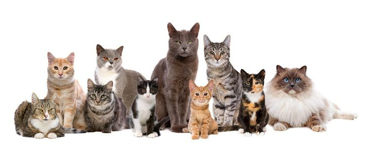

Gatos
RAZAS
- Persa: Conocidos por su pelaje largo y cara achatada. Son tranquilos y cariñosos.
- Siamés: Elegantes y vocales, con ojos azules y pelaje corto y puntiagudo.
- Maine Coon: Grandes y peludos, son amigables y sociables.
- Bengalí: Tienen un pelaje con manchas o rayas que parece de leopardo. Son muy activos.
- Sphynx: Sin pelo, pero muy cariñosos y juguetones.
- Ragdoll: Grandes, de ojos azules y pelaje semi-largo. Son tranquilos y dóciles.
- Británico de Pelo Corto: Cuerpo robusto y pelaje denso. Son calmados y afectuosos.
- Abisinio: Pelaje corto y denso, con una personalidad curiosa y activa.
- Scottish Fold: Orejas dobladas hacia adelante y aspecto tierno.
- Oriental de Pelo Corto: Esbeltos, con orejas grandes y ojos almendrados.
